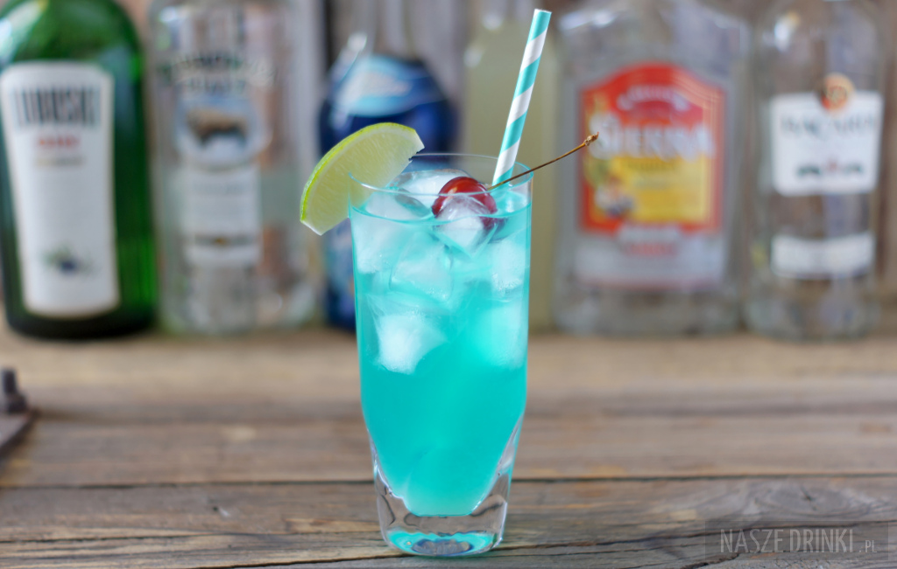

AMF

Adios Motherfucker (AMF) jest drinkiem, którego przygotowuje się z siedmiu składników, z czego aż pięć z nich to alkohole. Są nimi: wódka, rum, tequila, gin oraz likier blue curacao.
Ostatni składnik nadaje całemu napojowi ładny błękitny kolor.
Wszystkie składniki świetnie się ze sobą komponują i mimo dużej zawartości alkoholu drink jest po prostu dobry.
Skladniki
- wódka (15 ml);
- rum (15 ml);
- tequila (15 ml);
- gin (15 ml);
- likier blue curacao (15 ml);
- sweet and sour mix (60 ml);
- sprite lub 7-Up (60 ml);
- kostki lodu.
Jak zrobic AMF
- Do wysokiej szklanki typu highball, wypełnionej kostkami lodu, wlewamy wszystkie składniki po kolei: wódkę, rum, tequilę, gin, likier blue curacao oraz sweet and sour mix;
- Uzupełniamy szklankę spritem i delikatnie mieszamy;
- Adios Motherfucker można ozdobić dodając kawałek limonki lub cytryny i czereśnię koktajlową.
Wroc do strony glownej
Zrodlo